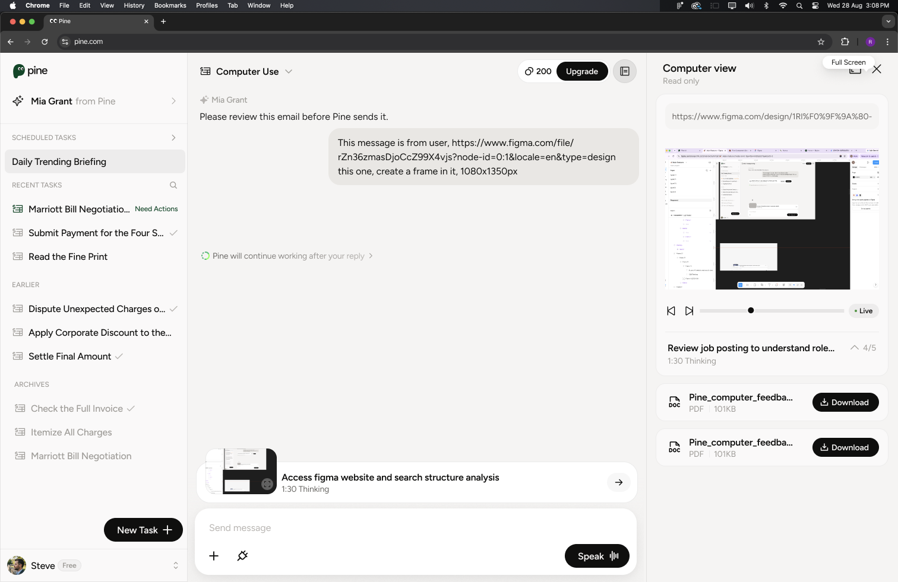

S8 to S9
Foundation
Express intent


Intent became structured, reviewable and actionable.
Six months across mobile and desktop — one continuous shift: from expressing intent, to understanding long-running work, to controlling an agent acting in the real world.
Intent became structured, reviewable and actionable.


Tasks gained history, continuity and repeatability.


The interface became a control room for an agent acting in the real world.
Chat input, inline forms, Need Actions, verification and three-way calling.
Input and controlTo-do, task and call summaries, voice states, artifacts and task cards.
Status and evidenceGoogle Calendar, Task Notebook, task sharing across web and mobile.
Memory and ecosystemFull-screen voice and toast patterns for low-attention moments.
Presence and pacingScheduled tasks, Replay Highlight, email review and repeatable Task Runs.
Repeatability and trustComputer Use across desktop, mobile, pop-up and side view.
Agency and oversightA cross-platform system spanning intent capture, live execution, human approval, artifacts and memory.
AI product design is the design of uncertainty — probability legible, latency meaningful, autonomy bounded, failure recoverable.
Pine gets things done by acting — real phone calls, bookings, forms, driving a computer. Its output is not an answer; it is an outcome in the real world.
The more capable the agent, the less the user sees — and the more it feels like losing control. Delegation anxiety, not capability, is the real adoption ceiling.

Voice is fast but lossy — did it mishear a name, a date, an amount, and act on the wrong thing?
MiscommitmentMinutes of silence while an AI makes real calls in your name. The black box is where trust dies.
The black boxMoney, identity, permissions — handed over with no visible brake reads as loss of control.
No exitEach stage of a delegated task has one dominant question and one failure mode. These three questions became the backbone of every design decision that follows.
The blind hand-off — a task submitted into a void.
→ Task cards set the goal, plan and what Pine may need, before execution.
The black box — minutes of silence while an AI acts in your name.
→ Continuous visibility: thinking states, live progress, a real-time window.
The unverifiable claim — “done!” with nothing to check.
→ Structured proof: summaries, artifacts and next steps to verify and reuse.
The agent is observable at every moment — from a one-line status to a full live screen, at the fidelity you choose.
Decisions that matter return to the human. Pine pauses at the right moments, without breaking the flow.
Every task ends in a structured, verifiable result you can check, keep and act on.
Visibility is a system of altitudes — a glanceable status for most moments, a full live window for the ones that matter. Two surfaces carry it: thinking states, and Computer Use.
Collapsed by default — one calm line: “I'm working.”

Tap to expand — the live step list.

Done — thinking folds away; the answer stays the hero.
Trust needs calm, not spectacle. Showing every token reads as noise and makes errors louder.
One live session at three altitudes, progressively disclosed. Read-only by design — always watchable, always rewindable.

Banner — one line + live thumbnail. Enough to know it's running.
Panel — live screen, step 4/5, timer, playback.

Full screen — the whole session, scrubbable like a recording.
Each level answers one question and offers one step deeper. Glance → Monitor → Inspect — no dead-ends, no forced next.
Every element answers a specific fear. Nothing here is decoration.
Watching is free; intervening is a separate, deliberate act — the agent can't be nudged by accident.
The elapsed thinking timer turns silence into progress. Nothing ever feels stuck.
Step 4 / 5 — a numbered plan makes the wait finite. Users forgive slowness they can measure.
A playback scrubber, not a log — every action replayable, accountability built in.
A single, obvious exit to full-screen inspection. The disclosure ladder never dead-ends.
Our first experiment streamed the model's full reasoning into chat — maximum transparency, catastrophic experience. Trust comes from legible reasoning, not visible reasoning.

Full reasoning, always expanded — hesitations amplified, hallucinated sub-steps became visible promises.
One calm summary line, expandable on demand. Transparency became a choice, not a burden.
Output length isn't under the designer's control — the UI must be. Summarise by default; disclose by intent.
Voice is the fastest way in — you speak ~4× faster than you type. But reading beats listening for anything dense, exact, or private. Pine is a multimodal loop; my job was the half voice can't carry.
Discussion, options, judgment. Voice keeps the conversation flowing — the gist, not every detail read back aloud.
Exact constraints — a booking time, a hard no-go window — become a scannable card. You tap through the spec instead of reciting it.
An SSN or password must never land in the voice channel. Pine stops you mid-sentence and opens a secure typed field instead.
Real-time, low-latency. Tracks pauses, hesitation, interruptions, back-channels — the live voice loop.
Runs alongside: plans, retrieves, calls tools, manages long tasks — surfaced as the screens in this study.
One sentence sets off two parallel minds — fast thinking holds the conversation, slow thinking runs the work. Every screen I designed is where background work surfaces to the human.
User speaks. Tone and urgency captured instantly.
Voice confirms intent; conversation keeps flowing.
Goal, plan and what Pine may need — set before acting.
◆ My screenRead-only window into the real call, step 4 / 5.
◆ My screenThe provider needs a human — three-way call card.
◆ My screenOutcome, next steps — verifiable and keepable.
◆ My screenEarned autonomy, not full autonomy. Five human-in-the-loop patterns, each placed where a wrong move would be irreversible: personal data, standing permissions, identity.
In-chat forms — Pine asks once, structured and inline, not an interrogation over ten messages.
Need-action cards — routines pause for explicit human sign-off before running.

Three-way verification — when a bank insists on a human, Pine dials you in, then takes the call back.

Outbound email review — nothing leaves in your name without your eyes on it first.

Google Calendar — permissions in context, scoped to the task, never a blanket grant.
Interruptions are spent like a budget — one policy decides every pause.
Pine interrupts only when regret would be irreversible — money, identity, standing permissions. Everything else keeps flowing.
An agent's word is worthless without receipts. Every run ends in a record the user can verify, keep, and act on.

Task card at start — goal, plan, what Pine may need. Expectations before execution.
One structured record per task — what was done, what changed, what's next.

Every call ends in an auditable to-do trail — outcomes become checkable items.
New → Started → In progress → Done → Continue. One card family, learned once, read every task at a glance.

Once the see–steer–get loop proves itself, users graduate to standing delegation — scheduled tasks, a notebook that remembers, replay highlights that keep long runs auditable. Trust compounding into a relationship.
Scheduled tasks — recurring work Pine runs without being asked twice.

Cadence, scope and limits set once, editable anytime.

Every run leaves structured memory Pine builds on.
Key moments of long runs, auto-marked for review.

LLM output is a distribution, not a result. Every surface needs a “partially right” state — not just success and failure.
Pacing is to AI products what typography is to print. We design the wait, not just the answer.
What the model remembers, touches, and forgets shapes trust more than any single screen.
Misheard calls, wrong forms, refused requests — repair paths get the same design care as the golden path.
Icon library, button components, chat spacing rules kept consistent across sprints — the quiet work that makes 100+ screens feel like one product.
Users don't evaluate the model; they evaluate what they can see of it. The status system is the product.
The hardest decisions were about when NOT to automate — where the agent stops and asks.